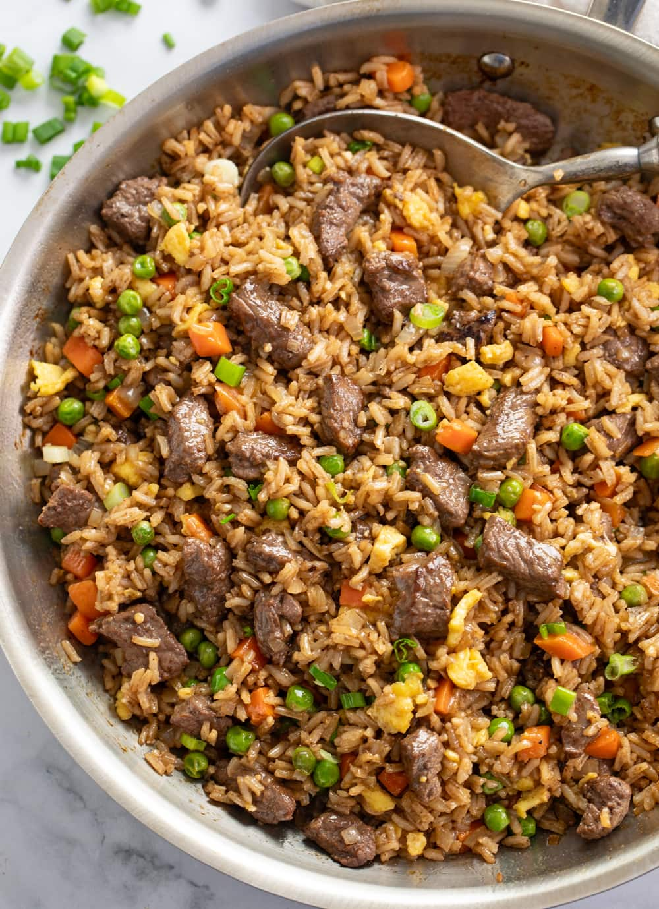

Fried rice

A delicious meat inspired fried rice to satisfy your appetite
This recipe includes optional ingredients which you can add according
to your liking. Ingredients should be diced. You can add different types
of meats for example chicken, pork, sausage, etc.
Required ingredients
- Rice (Day old)
- 1 large Onions
- 1 Bell peppers
- 2 Large Carrots
- Cauliflower
- 1 large Tomato
- 200g of Spring onions
- 300grams of chopped cooked beef
- Spices of your choice
- Soy sauce
Optional ingredients
- Extra meat - Chicken, pork, Sausage
- Fresh chillies/ Chilli sauce
- Tomato sauce
- Fruit chutney
- Extra veggies like mushroom, brocolli, etc
Steps:
- Chop vegetables into cubes
- Grate tomato
- Chop chillies into very small pieces if you are using chillies
- Add oil of your choice to a pan (Never add chillies to the pan if there is no moisture in the it)
- Add chopped vegetables to your pan except spring onion
- Immedietly add spices of your choice to the pan
- Lightly salt the veggies
- Add meat to the pan once veggies are translucent
- Lightly spice the meat
- After 2 minutes add chopped tomatoes and chilli (If applicable)
- Also add soy sauce and sauces of your choice to the pan
- Let it simmer until tomatoes thicken
- Add rice to the pan and stir until well mixed
- Add egg and spring onion (I like mine well cooked lol) to the pan and mix
- Wait for egg tp cook
- Remove from the cooker and dish into bowls
Home page